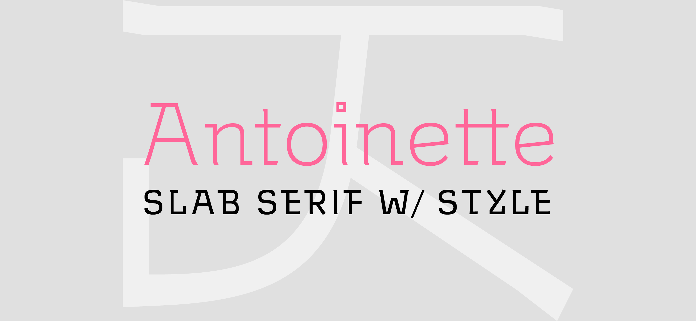
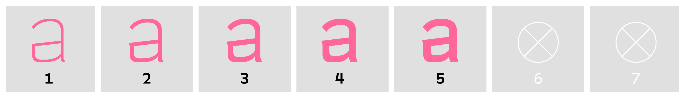
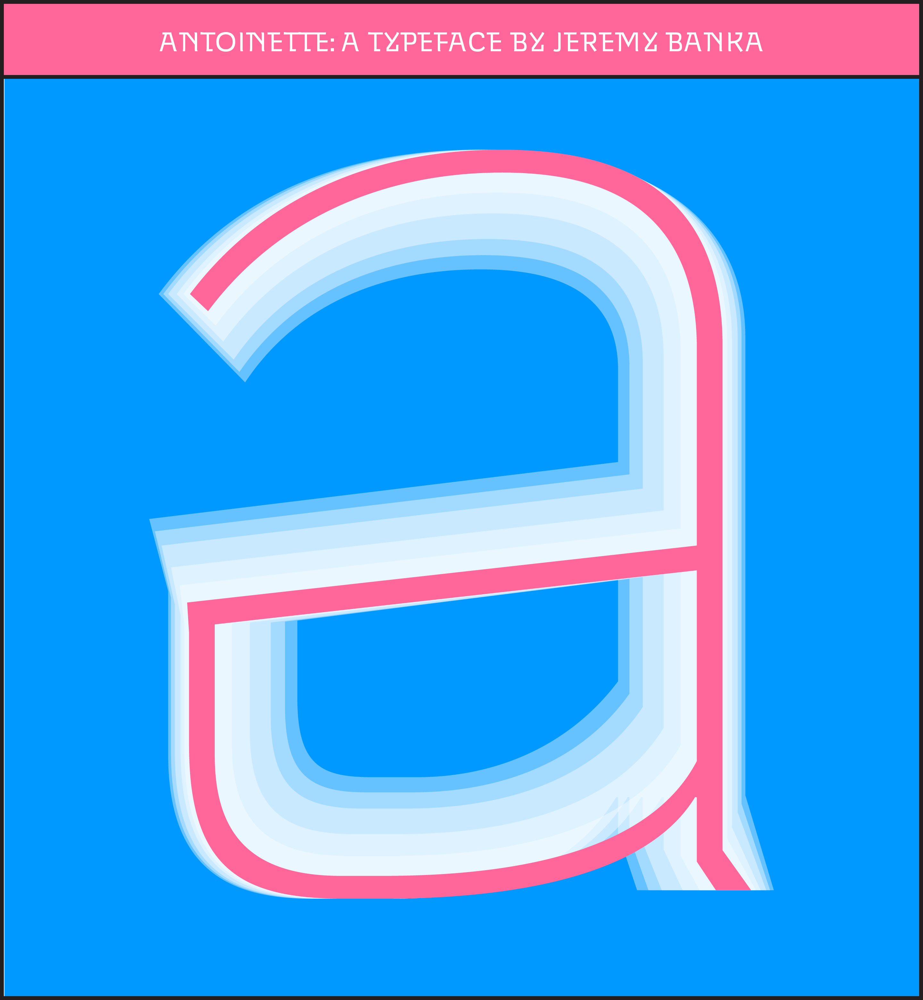

Antoinette is a stylish text and display face with geometric and humanist influences. With a monoline design, wide, spacious letters, and smaller apertures, Antoinette is perfect for headings and short text applications. She pairs well with Ymirsson as a pseudo-italic in rich text environments.

Like Museo, Antoinette adjoins transitive serifs to an essentially geometric model. Unlike Jos Buivenga’s contemporary classic, however, Antoinette has a more angular architecture, bringing a sense of grit and intensity to the transitive genre that Museo decidedly lacks.
